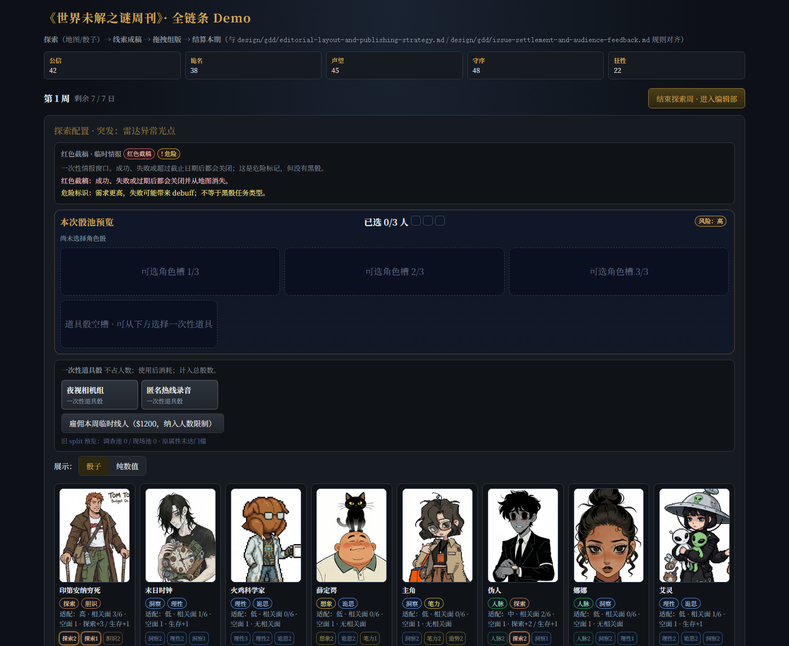
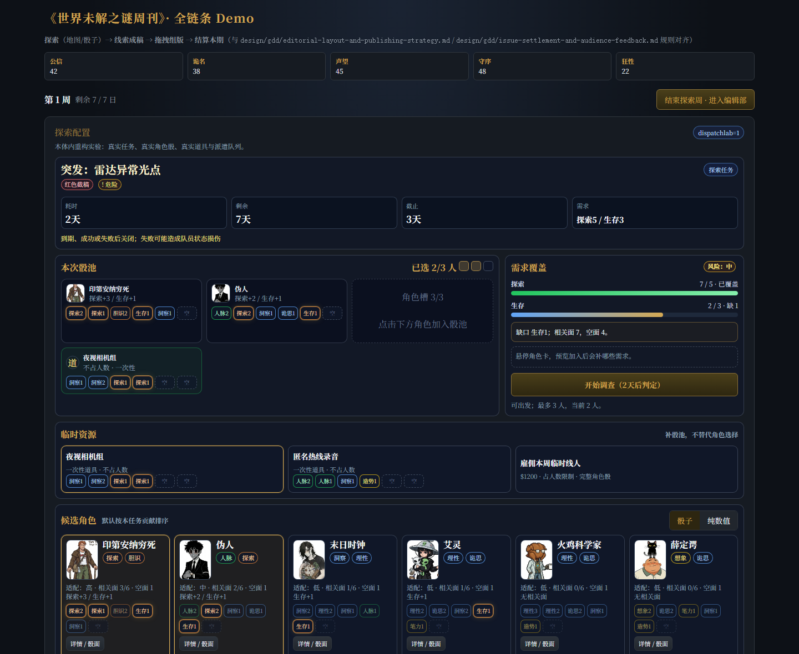
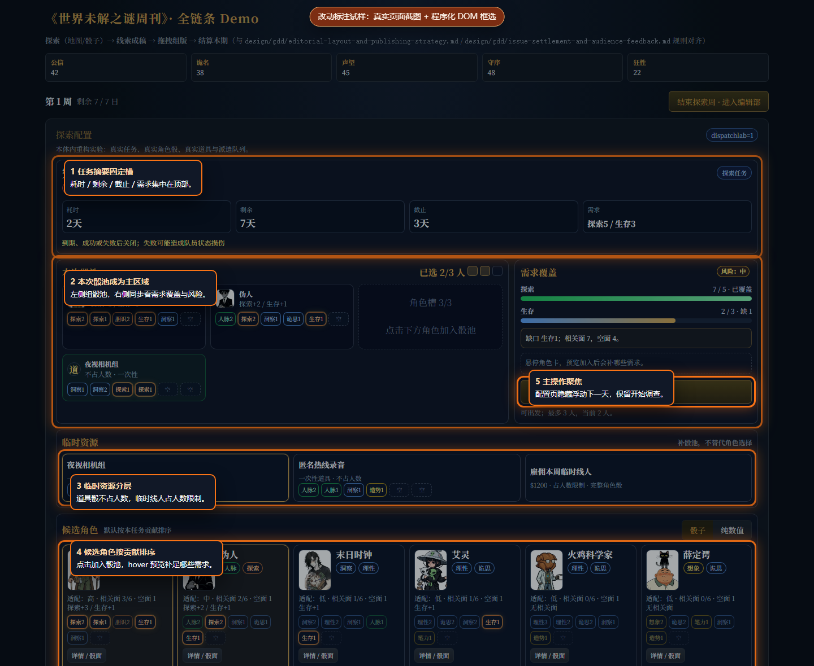

01 · 旧版同状态
旧版派遣页以说明文字、预览槽位和角色卡平铺为主，玩家需要自己把任务需求、道具、候选角色和风险联系起来。

本页用于验证复杂 UI 交付时的“旧版 / 新版 / 新版标注版”说明方式。标注图由截图脚本根据真实 DOM 元素位置临时叠加，不是 AI 生图。
结论：此方式适合复杂页面说明“本次到底改了哪里”。正式验收仍以无标注截图和真实运行路径为准。
旧版派遣页以说明文字、预览槽位和角色卡平铺为主，玩家需要自己把任务需求、道具、候选角色和风险联系起来。

新版把任务摘要、本次骰池、需求覆盖、临时资源和候选角色重新分层，使用真实角色与道具状态验证页面手感。

橙色框线标出本次主要改动区：任务摘要固定槽、本次骰池主区域、临时资源分层、候选角色排序、主操作聚焦。
